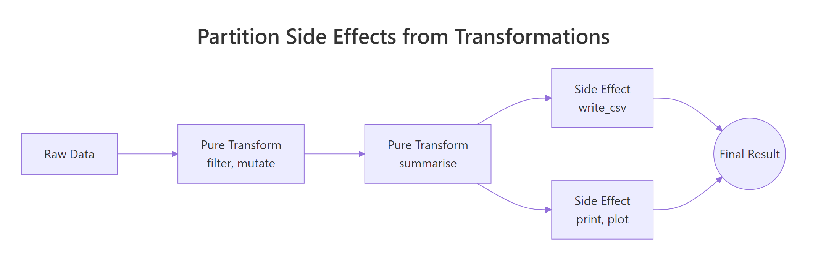
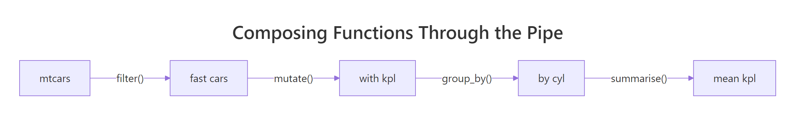
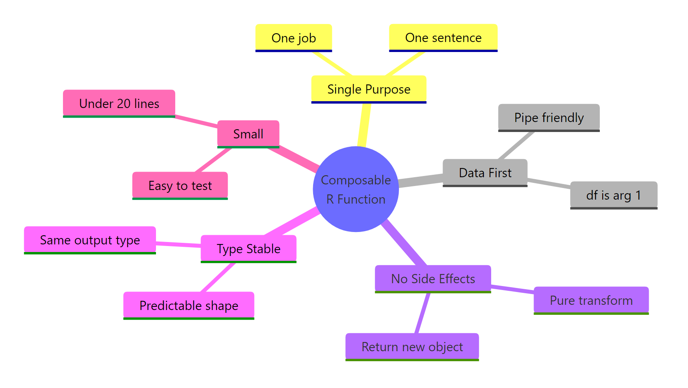

Composable R Code: Design Functions That Chain Together Like Unix Pipes
Composable R code is built from small, single-purpose functions that take a data object as their first argument and return the same shape, so they chain effortlessly through |>, exactly like Unix shell commands chain through |.
This tutorial gives you five concrete rules for writing functions that snap together cleanly, plus before-and-after refactors so you can see the difference in real R code. We will use base R and the tidyverse interchangeably, both ecosystems share the same composition idea.
What does it mean for R code to be composable?
Unix shell commands feel powerful in combination because every command reads from stdin and writes to stdout the same way. R can feel just as powerful once your functions follow a small set of shape rules. Here is a tiny end-to-end pipeline using nothing but composable building blocks, each function does one job, takes a data frame, and hands one back.
Look at the structure. Four functions, filter(), mutate(), group_by(), summarise(), chain through |> without a single intermediate variable. Each one accepts a data frame and returns a data frame. None of them print, plot, or write a file as a side effect. That is what "composable" means in practice: predictable shape in, predictable shape out, one job per function.
A function is composable when you can drop it into the middle of a pipe without thinking about it. Five rules make that possible. Each section below covers one rule, with a refactor that shows what changes when you apply it.
|> only works because the functions on either side agree on a shape. Get the function shapes right and the pipe falls out naturally.Try it: Write a 2-step pipe on mtcars that keeps rows where cyl == 6 and then computes the mean hp. Save the result to ex_mean_hp.
Click to reveal solution
Explanation: filter() and summarise() both take a data frame and return one, so they snap together with |> directly.
How do you keep a function focused on one job?
The first rule is the hardest one to follow because it asks you to resist convenience. When you are deep in an analysis, it is tempting to write one big function that loads, cleans, summarises, and prints results all at once. That function feels efficient, until you need to reuse half of it and discover the halves are stuck together.
Here is a "swiss army knife" function that does too many things. Notice how many concerns are tangled inside it.
Notice four problems jammed into seven lines. The function filters rows, derives a new column, aggregates, and prints the result as a side effect. If you want to filter without aggregating, or aggregate without printing, you cannot. Worse, you cannot describe the function in one sentence without using the word "and."
Now refactor it into three small helpers that each do exactly one thing.
Each helper does one thing and you can describe it in a sentence: "filter rows above an mpg floor," "add a kilometres-per-litre column," "aggregate kpl by cylinder." You can reuse filter_fast() in twenty other contexts. You can swap mean_kpl_by_cyl() for median_kpl_by_cyl() without touching the rest. The pipeline reads top-to-bottom like a recipe.
Try it: Write a function ex_clean_mpg(df) that drops rows where mpg is NA and only that. Test it on a tweaked mtcars where one row has mpg = NA.
Click to reveal solution
Explanation: One job, drop NA rows in mpg. Nothing else. The function is now reusable anywhere you need that exact step.
Why must the data argument come first?
The second rule is mechanical but absolutely load-bearing for pipe-friendliness. The native pipe |> always passes its left-hand side as the first argument of the right-hand function. If your function takes data as its second or third argument, it will not chain.
Watch what happens when you put the data argument in the wrong position.
The first call works because mtcars slots into df. The second call fails because mtcars gets bound to factor and then R tries to do mtcars$mpg * df, which has no meaning. The fix is permanent and free: always make the data object the first argument. Optional tuning parameters go after it with sensible defaults.
_ placeholder when an existing function puts data in the wrong slot. R 4.2+ supports mtcars |> lm(mpg ~ wt, data = _) so you can pipe into the data argument explicitly without rewriting the function.Try it: Write ex_top_hp(df, n) that returns the top-n rows of a data frame by hp. Make it pipe-friendly.
Click to reveal solution
Explanation: Data first, configuration second. The function chains directly into any upstream pipeline.
How do you keep a function free of side effects?
The third rule is the one that separates "code that runs" from "code you can trust inside a pipeline." A side effect is anything a function does besides returning a value: printing, plotting, writing a file, modifying a global variable, sending an HTTP request. Side effects are not bad, they are how programs touch the real world, but they wreck composability when they are smuggled inside transform functions.

Figure 1: Pure transforms feed each other; side effects sit at the edges of the pipeline.
The picture says it: pure transforms live in the middle of the pipeline and pass shapes to each other. Side effects sit at the very edges, read at the start, write/print/plot at the end. Mixing the two zones is what creates code you cannot reuse.
Here is a function that mutates a global variable as a side effect. It happens to "work" but it cannot be safely called twice.
The function does its math correctly but it secretly modifies call_count every time it runs. If you call it inside a pipe and then re-run the same pipe later, the counter keeps climbing, and now your "pure" data transformation has hidden state. Compare it with the pure version below.
The pure version takes a vector, returns a vector, and does nothing else. Run it a thousand times and the rest of your environment looks identical. That is the property you want for any function that lives in the middle of a pipe.
<<- operator is the most common source of hidden side effects in R. It writes to the parent environment, which usually means a global variable. If you see <<- inside a transform function, treat it as a bug until proven otherwise.Try it: Refactor bad_log below into a pure function that takes a numeric vector and returns its log10, with no globals.
Click to reveal solution
Explanation: No global, no print, no write. The function takes input, returns output, and that is the entire contract.
What is type stability and why does it matter?
The fourth rule is about predictability. A function is type-stable when its output shape and type depend only on its input shape and type, never on the input values. Type-unstable functions are a famous footgun in base R because they sometimes return a vector, sometimes a list, sometimes a matrix, depending on what the data happens to look like that day.
The classic offender is sapply(). It tries to "do the right thing" by simplifying its result, which means you cannot predict its return type ahead of time.
Same function, two different return types, integer when there is data, list when the input is empty. If the next step in your pipe expects an integer vector, the empty case crashes with a confusing error and you spend an hour finding it. Type-stable alternatives let you declare the contract up front.
vapply() forces you to declare the per-element type up front, so the function either returns the type you asked for or errors immediately. purrr::map_dbl() does the same thing but with a cleaner name, the _dbl suffix tells you "always returns a double vector." Both functions guarantee a stable shape, which means downstream code can rely on them.
Try it: Replace the sapply() call below with purrr::map_dbl() so the function always returns a numeric vector.
Click to reveal solution
Explanation: map_dbl() is contractually guaranteed to return a double vector, even on an empty input, which would make sapply() return a list.
How do you compose small functions into a real pipeline?
The fifth rule is "small", keep each helper short enough that you can hold it in your head all at once. Roughly twenty lines is a good ceiling. Once you have small, single-purpose, data-first, side-effect-free, type-stable functions, composing them is the easy part. You just write down the steps in order and connect them with |>.

Figure 2: Each step in a pipe takes a data frame and returns one, so the next step plugs straight in.
The diagram captures the whole idea. Each box is a function that takes a data frame and returns one. The arrows are |>. There is no special composition machinery, just functions that share a shape. Now let us build a real example with three small helpers and chain them on iris.
Each helper is short (1–4 lines), takes a data frame as its first argument, returns a data frame, and has no side effects. None of them know about the others. Now compose them.
Notice how the pipeline reads as a sentence: "drop NA rows, z-scale Sepal.Length, take the top 3." If you wanted to swap z-scaling for min-max scaling, you would write a new minmax_scale() helper and substitute it, none of the other steps would change. That is the leverage composability gives you: small helpers are cheap to add, swap, and combine.
purrr::compose() lets you build a new function out of existing ones without going through data. It is useful when you want to create a named pipeline that is itself a single function, for example, clean_and_scale <- compose(z_scale, drop_na_rows, .dir = "forward").filter_, add_, scale_, drop_, summarise_ make pipelines read like English. Avoid noun-only names like analysis() or stats(), they hide what the function does.Try it: Add a fourth helper add_id(df) that prepends a 1-based row id column called row_id. Chain it into the pipeline so the final result has row_id plus the existing columns.
Click to reveal solution
Explanation: add_id() follows every rule, single job, data first, no side effects, type-stable, small. So it slots into the pipeline at any position you like.
Practice Exercises
These exercises stitch the five rules together. Use distinct variable names so they do not collide with tutorial state.
Exercise 1: Refactor a swiss-army function
Below is a 12-line function that filters, scales, summarises, and prints. Refactor it into three composable helpers, my_filter(), my_scale(), my_summary(), plus one orchestrator that chains them. The orchestrator should return the result, not print it.
Click to reveal solution
Explanation: Each helper is single-purpose, data-first, side-effect-free. The orchestrator is the only thing that knows about the order of steps, and it returns its value instead of printing.
Exercise 2: Build a reusable column scaler
Write scale_columns(df, cols) that takes a data frame and a character vector of column names, returns a new data frame with those columns z-scaled, and leaves the other columns untouched. It must be type-stable (always returns a data frame), data-first, and side-effect-free. Then chain it on iris to scale Sepal.Length and Petal.Length together.
Click to reveal solution
Explanation: The function loops over the column names but the contract is clean, data frame in, data frame out, no globals, predictable shape.
Exercise 3: Compose a data quality report
Write three small helpers and chain them on airquality to produce a per-column quality report:
count_missing(df)returns a data frame with one row per column and ana_countcolumn.count_outliers(df)returns the same shape but with anoutlier_countcolumn (define an outlier as> mean + 3*sdor< mean - 3*sd, numeric columns only).merge_quality(missing_df, outlier_df)joins them on column name.
Then call all three on airquality and assign the merged result to quality_report.
Click to reveal solution
Explanation: Each helper does one thing and returns a data frame. The orchestration step combines them. Adding a fourth quality check tomorrow takes one more helper, none of the existing ones change.
Complete Example
Here is an end-to-end mini analysis on starwars that uses every rule. We will compute a body-mass index for human characters, summarise the average BMI by homeworld, and pull the top-3 homeworlds, using six small composable helpers.
Six helpers, each three lines or fewer. The pipeline reads top-to-bottom: keep humans, drop missing body data, add BMI, average by homeworld, require at least two characters per homeworld, take the top 3. If your manager asks tomorrow for the bottom 3 instead, you change one helper. If they ask for droids instead of humans, you change one helper. That is composability paying off.
Summary

Figure 3: The five rules of composable R functions.
| Rule | What it means | Why it matters | |
|---|---|---|---|
| Single purpose | One job, one sentence to describe it | Reusable across contexts; easy to test | |
| Data first | The data object is the first argument | Works with `\ | >` without ceremony |
| No side effects | No prints, plots, writes, or globals inside transforms | Safe to call repeatedly inside a pipe | |
| Type stable | Same input shape → same output shape | Downstream steps can rely on the contract | |
| Small | Roughly under 20 lines | Holdable in your head; easy to swap |
Apply all five and your functions will snap together with |> exactly the way Unix commands snap together with |. Apply none of them and you end up with the swiss-army functions every refactor starts by tearing apart.
References
- Wickham, H., Tidyverse design principles: Unifying principles. Link
- Wickham, H., The tidy tools manifesto. Link
- Wickham, H. & Grolemund, G., R for Data Science, Chapter 18: Pipes. Link
- Tidyverse style guide, Pipes. Link
- Wickham, H., Advanced R, 2nd Edition, Chapter 6: Functions. Link
- dplyr documentation. Link
- purrr documentation,
map_dbl()and friends. Link - R Core Team, An Introduction to R, native pipe
|>. Link
Continue Learning
- Functional Programming in R, the broader paradigm that composable function design fits inside.
- purrr map() Variants, the type-stable workhorses (
map_dbl(),map_chr(),map_lgl()) for replacingsapply(). - Writing R Functions, the foundations for writing functions before you make them composable.